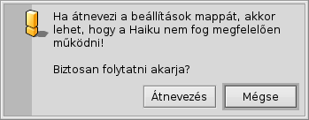
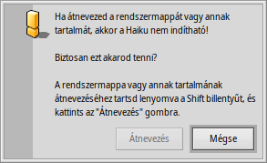

Magyar
Magyar Français
Français Deutsch
Deutsch Italiano
Italiano Русский
Русский Español
Español Svenska
Svenska 日本語
日本語 Українська
Українська 中文 ［中文］
中文 ［中文］ Português
Português Suomi
Suomi Slovenčina
Slovenčina Português (Brazil)
Português (Brazil) English
EnglishFájlrendszer felépítése
A Haiku fájlrendszer felépítése elég jó átlátható, a fájlok és mappák nevei nem bonyolultak, egyértelmű neveik vannak. A rendszer számára fontos fájlok és mappák védve vannak a véletlen felhasználói hibáktól, és erre kapunk is figyelemztetést:
 A második típusú figyelmeztetés akkor jelenik meg, ha átnevezni vagy törölni szeretnénk a rendszer mappáján belül. Itt az "" gomb csak akkor lesz elérhető, ha a SHIFT-et is lenyomjuk.
Alapvetően 3 rész különíthető el a gyökér mappából kiindulva a rendszer-lemezen:
| /boot/system/ | A rendszer található itt. Nem ajánlott a módosítása! | |
| /boot/common/ | A felhasználók közös fájljai. | |
| /boot/home/ | A felhasználó saját mappája. A saját beállításaid és fájljaid itt találhatóak. |
 A rendszer mappa - /boot/system/
A rendszer mappa - /boot/system/
Az BeOS elődje után a Haiku rendszer mappája is a /boot/beos/. Ezt régebbi dokumentációkban is megtalálod (például az eredeti BeBook-ban).
Bármi is legyen a neve, a tartalmát nem ajánlott módosítani. A Haiku összes frissítése hozzáadhat, törölhet illetve felülírhat bene bármit. Ha bármit hozzá szeretnél adni a rendszerhez, például új kiegészítőket, vagy eszközvezérlőket, akkor azokat megteheted a /boot/home/ mappán belül, vagy ha szükséges, akkor az összes felhasználóra érvényes /boot/common/ mappában. Mivel a Haiku még nem rendelkezik felhasználók támogatásával, így jelenleg nincs különbség, ugyanis csak egy felhasználó és egy home mappa található. De ha a későbbiekben már a felhasználók kezelése működik, akkor már tudjuk, hogy mit és hogyan is kezelhetünk.
Nos; tegyük fel, hogy egy új értelemzőt szeretnél telepíteni a legújabb képformátumhoz, amit egyszerűen nem másolhatod a rendszer mappába. Emlékezz rá: ne módosítsd!
Így ennek a tükörképébe helyezheted azt a /boot/common/ vagy /boot/home/config/ mappán belül.
Ebben a példában a rendszer mappa a
/boot/system/add-ons/Translators/
Tehát, ennek a "tükörképe" a
/boot/home/config/add-ons/Translators/
vagy
/boot/common/add-ons/Translators/
Ennek a megoldásnak másik előnye is van: ha egy komponens meghibásodik (például eszköz vezérlők esetében), akkor választhatjuk a "Disable user add-ons" opciót a Rendszertöltő menüjében, és így a hibás összetevő nélkül indíthatjuk a gépet.
A legtöbb esetben nem találkozunk ilyen problémával, mivel a programok megbízható forrásból származnak, és tartalmaznak egy telepítő eljárást, ami megoldja a telepítést.
A közös mappa - /boot/common/
A Haiku még nem többfelhasználós rendszer. Ha ez már megvalósításra kerül, akkor minden felhasználónak lesz egy home mappája, ami a többiek számára nem hozzáférhető. Minden program vagy a rendszerhez adott kiegészítő és adat ami minden felhasználónak elérhető kell, hogy legyen, azokat a /boot/common/ mappán belülre kell másolni.
A saját mappa - /boot/home/
Ez a mappa a részedre lett létrehozva. Ide kedvedre másolhatsz illetve innen törölhetsz bármilyen fájlt vagy mappát. Mindazonáltal nem ajánlott a ~/config/ mappa tartalmát módosítani. Lehetőséged van kitörölni a ~/config/settings/ mappát anélkül, hogy a rendszer működésképtelenné válna, de ki akarná az összes beállítását illetve a programok adatait törölni? Mindenesetre a rendszer figyelmeztet mindket a végrehajtás előtt a fennt említett üzenetek egyikével.
A ~/config/add-ons/ mappán belül, ami a tükörképe a rendszer kiegészítőket tartalmazó mappájának, van néhány "érdekes" mappa. (A hullámosvonal ("~") egy hivatkozás a "/boot/home/" mappára a Terminálban, így nem kell azt mindig kiírni.)
| Alap esetben itt találhatóak a levelek. | ||
| ~/queries | A Lekérdezések tárolására szolgál, alap esetben csak ideiglenesen, 7 napig. | |
| ~/config/be/ | Ez is egy BeOS örökség. A be mappa tartalmazza az Asztalsáv menüben megjelenő mappákat. Ehhez adhatunk hozzá vagy törölhetünk fájlokat, mappákat, hivatkozásokat illetve lekérdezéseket. | |
| ~/config/bin/ | A rendszer mappa kiegészítéseként a /boot/system/bin/ mappa tartalmazza a felhasználó által megadott parancssori programokat. | |
| ~/config/boot/ | Ebben a mappában találhatóak a Felhasználói szkriptek amik a rendszer indításakor, leállításakor és a leállítás végeztével hajtódnak végre. | |
| ~/config/boot/launch/ | Az automatikusan induló programok vagy dokumentumok hivatkozásait tartalmazza. | |
| ~/config/data/fonts/ | Egyszerűen csak másold ide a TrueType vagy a Postscript formátumú betűtípusokat. | |
| ~/config/settings/ | Itt találhatóak a programok beállításai és néhány rendszer-beállítás fájlja. Néhány program a saját mappáján belül tarja a beállításait, a többi egyszerűen csak ide rakja őket. | |
| ~/config/settings/beos_mime/ | A MIME adatbázis mappája minden fájltípust és azok beállításait tartalmazza. | |
| ~/config/settings/kernel/drivers/ | Egy érdekes fájlt találhatunk itt: a kernel alacsony szintű konfigurálási lehetőséget biztosít például az SMP kikapcsolására, bekapcsolhatjuk a soros porti hibakeresést vagy engedélyezhetjük az energia-kezelést. Minden konfigurációs sor úgy aktiválható, hogy töröljük a sor elején lévő "#"-et. Csak óvatosan! | |
| ~/config/settings/Tracker/ | A Nyomkövető beállításain kívül még néhány érdekes mappa is található itt: | |
| DefaultFolderTemplate/ | Az új mappa alapértelmezett sablonja, mely tartalmazza a megjelenítési és a rendezési beállításokat illetve az ablak méretét. Minden új létrehozott mappa ezt a sablont használja majd. | |
| DefaultQueryTemplates/ | Megadható a különféle fájltípusokhoz a lekérdezések eredményeinek megjelenése. További információk a Lekérdezések: Az eredmény ablak fejezetben. | |
| Go/ | Készíts hivatkozásokat ebbe a mappába a "kedvenc" mappáiról, hogy elérhetőek legyenek azok a megnyitás és mentés ablakokban. További információk A Haiku felhasználói felülete: Kedvencek és legutóbbi mappák fejezetben. | |
| Tracker New Template/ | Különböző fájltípusokhoz hozhatsz létre sablonokat, melyek a Nyomkövető menüjéből érhetőek el. További információk a Nyomkövető: Munka a fájlokkal fejezetben. |